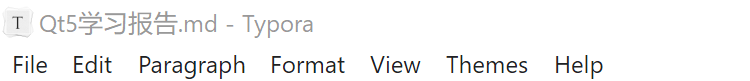
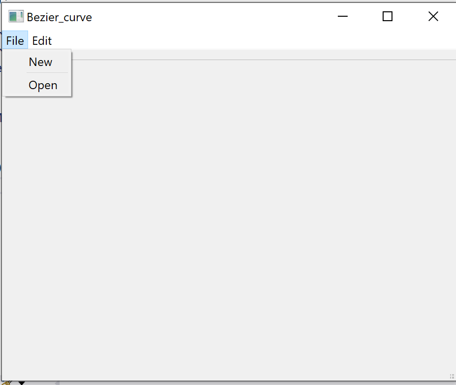
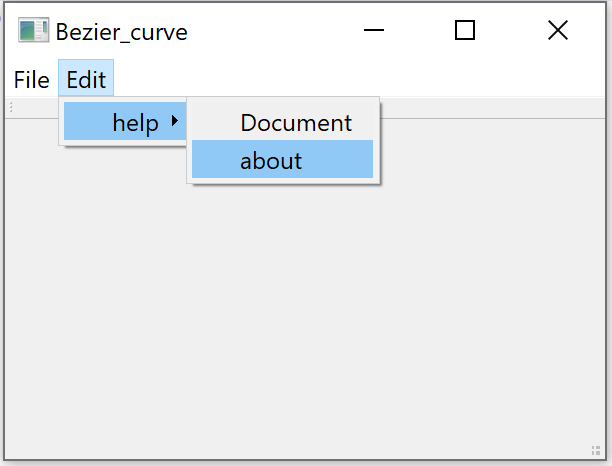
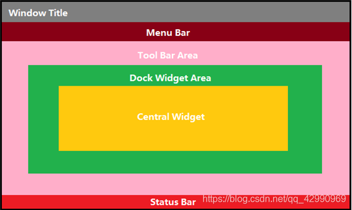
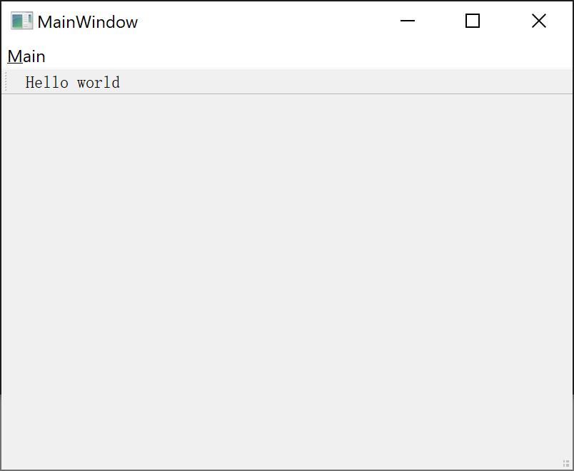
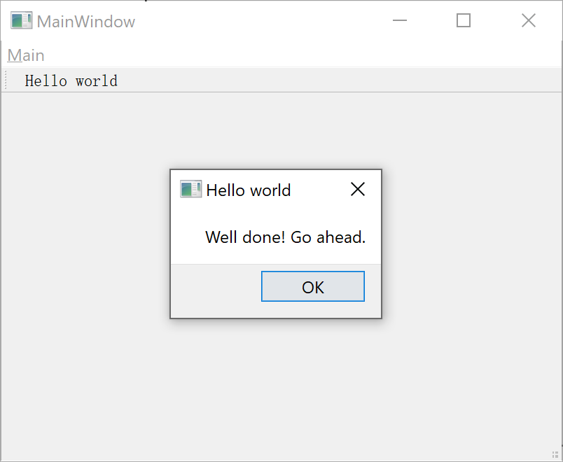

主要参考材料为
QMenu是Qt中的菜单类，常常挂载在菜单栏类QMenuBar上. 下图中标题栏下方的水平栏即为菜单栏，其中各个子选项即为菜单类.

我们的主界面继承QMainWindow时，其本身含有menuBar()成员. 使用menuBar()可以得到菜单栏QMenuBar指针，然后就可以直接添加QMenu或者QAction.
1
2
| QMenuBar* MenuBar = this->menuBar();
this->setMenuBar(MenuBar);
|
通过上述代码，我们为主界面设置好了菜单栏. 接下来为其添加菜单.
1
2
| QMenu* fileMenu = MenuBar->addMenu("File");
QMenu* editMenu = MenuBar->addMenu("Edit");
|
而后为菜单添加下拉项，设置用户点击某项时的操作.
在图形化界面中，同一操作可由不同的方式所触发，如快捷键、菜单栏选项等. 从面向对象出发，将操作抽象成为QAction类.
1
2
3
| QAction* build_act = fileMenu->addAction("New");
fileMenu->addSeparator();
QAction* open_act = fileMenu->addAction("Open");
|
其中 addSeperator 为下拉项间添加了一条分割线.
至此，我们的界面如下.

亦可设置二级菜单.
1
2
3
4
| QMenu *sub_menu = new QMenu("help");
menu->addMenu(sub_menu);
sub_menu->addAction("Document");
sub_menu->addAction("about");
|
效果如下.

如何实现程序对我们操作的反应？我们使用 connect() 函数 .
1
2
|
connect(hello_world_action_, &QAction::triggered, this, &MainWindow::HelloWorld);
|
这样就将某一QAction与槽函数联系在一起.
最后介绍QToolBar，其位置如下图所示.

其与前述内容类似，给出如下若干常用接口.
1
2
3
4
5
6
7
8
9
10
11
12
13
14
15
16
17
18
19
20
|
QToolBar *toolBar=new QToolBar(this);
addToolBar(Qt::LeftToolBarArea,toolBar);
toolBar->setAllowedAreas(Qt::LeftToolBarArea|Qt::RightToolBarArea);
toolBar->setFloatable(false);
toolBar->setMovable(true);
toolBar->addAction(newAction);
toolBar->addSeparator();
QPushButton *btn=new QPushButton("aa",this);
toolBar->addWidget(btn);
|
Hello代码框架的分析
1
2
3
4
5
6
7
8
9
10
11
12
13
14
15
16
17
18
19
20
21
22
23
24
25
26
| void MainWindow::CreatButtons()
{
hello_world_action_ = new QAction(tr("&Hello world"), this);
connect(hello_world_action_, &QAction::triggered, this, &MainWindow::HelloWorld);
main_menu_ = menuBar()->addMenu(tr("&Main"));
main_menu_->addAction(hello_world_action_);
main_toolbar_ = addToolBar(tr("&Main"));
main_toolbar_->addAction(hello_world_action_);
}
void MainWindow::HelloWorld()
{
QMessageBox::about(this, tr("Hello world"), tr("Well done! Go ahead."));
}
|
分别为
- 初始化动作Hello world并将其与槽函数连接.
- 初始化菜单、工具栏.
- 将QAction加载到各个组件中.
Hello程序编译结果展示

Hello动作效果展示，这一动作可以通过菜单栏与工具栏触发.
